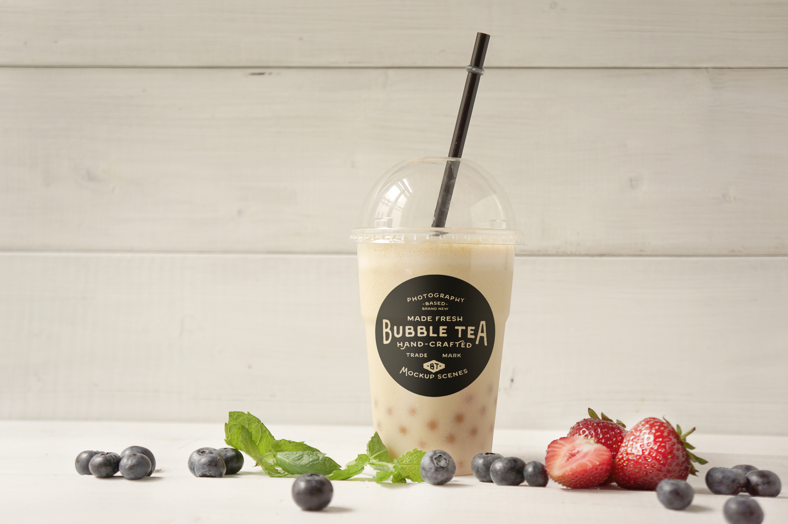
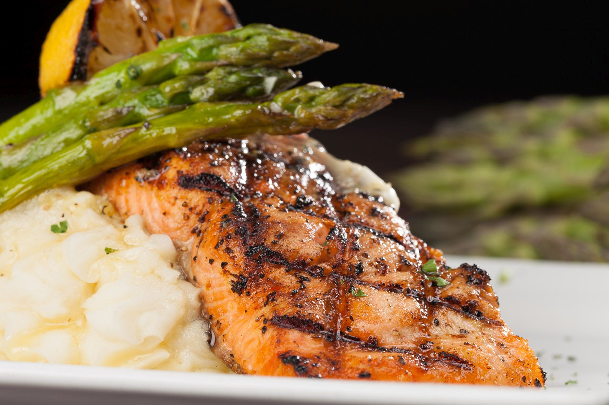

Tasteful is a food search app that provides the user with a personal and custom search for food. Tasteful matches descriptive keywords of the desired food and the user’s personal food preferences creating a refined and precise search experience. Instead of choosing between food suggestions based on the opinions and preferences of others, Tasteful connects the user with options that appeal to their food preferences, desires, and cravings.
My name is Ronaldo DeGuzman. I graduated from the University of San Francisco (B.S. Kinesiology). I want to intersect my background and experience in the health and medical field with computer programming and software development. On this project, I was a part of the backend team with Ed.
With my three years of progressive experience in customer service, in both retail and professional settings, I have a strong desire to express my excellent problem solving, strong customer relations, management, and administrative skills by pursuing a career that would lead to a challenging and successful position. My personal experience with managing staff, building strong relationships, and efficiency in a fast-paced environment will allow me to go above and beyond in my career path. I have truly found my passion in front-end and back-end web development.
Growing up I've always had a passion for seeing how things work and a crazy desire to build and create. Channeling that into Full stack web development was an easy transition considering how into computers I am. I'll be a strong a to any team that I'm put into with the skillset I've developed in the past and will continue to develop well into the future of my career.